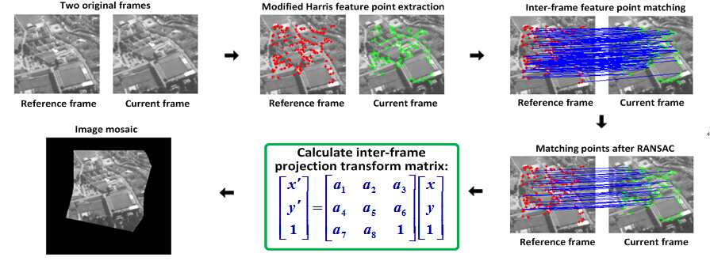

Inverse optimal control for human-robot cooperation
My research topic in ITR, TUM. Advisor: Prof. Sandra Hirche
..
Flow Chart

Highlights
- A modification for Harris feature point extraction method is introduced to avoid feature points unevenly-distributed over image. Besides, descriptor for each Harris feature point is established to make the feature point matching more efficient. RANSAC algorithm is then applied to remove the error matching outliers.
- This image mosaic algorithm is suitable for a variety of forms of inter-frame motions including translation, rotation, affine and slight projection transform. The project is highly evaluated during the acceptance tests.
Video Demo
..
© 2015 Curriculum Vitae All Rights Reseverd | Design by Wanxin Jin & Doctor Yang